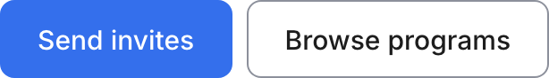
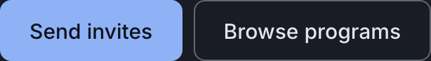
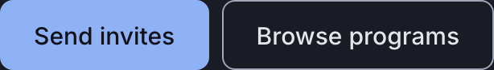
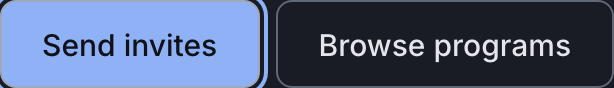

Atom
Button
The one thing on a screen that makes something happen. Three forms in the whole product and a single rule that decides between them: one solid action per zone.
Anatomy
.wf-btnthe base: the outline form, a white fill with a 3:1 boundary and a 44px minimum height.wf-btn.solidthe emphasis modifier: the action fill and its white ink.wf-btn.blockfull width, which is layout rather than emphasis.wf-btn.compactthe smaller step, and it exists in exactly one container, the app bar
Variants and sizes
Emphasis
A zone has one solid action and everything beside it is outline. Not a property of a label: the same words are solid where the screen exists for them and outline where they sit beside something more important.
solid
the one action the zone exists for
outline
everything else in the zone
Size
Set by the container, never by importance. There is one size in the product and one exception, and the exception is the app bar, where a full height control would eat the bar.
default
44px minimum, every screen
compact
the app bar only
Width
Layout, deliberately not an axis. The same button sits full width in a one column container and auto width beside a sibling, and it is the same button.
The empty cells, and why they are empty
There is no icon inside a control anywhere in this product, so the content axis has one value, label. "Icon plus label", "label plus arrow" and "icon only" are combinations Brio does not have, and they are not invented here to fill a matrix.
When to use it
The button is where the operator acts and where the employee finishes. It carries the one thing a screen was built for: send the invites, open the check-in, browse the library, try again. The voice rules fix the words (one action, one label) and this component fixes the form (one action, one form): where the same label is solid on one screen and outline on another, the product is telling the operator two different things about how important that action is.
The rule, and the anti rule
Do this. On the dashboard, "View full pulse" is solid because reading the pulse is what the dashboard is for. "Browse programs" beside it is outline.
Not this, use Dialog instead. On the screen with no program yet, "Browse programs" becomes the solid one, because now it is the only thing to do. If you find yourself wanting two solid buttons in one zone, you do not need a second button, you need a Dialog: a decision with two equal answers belongs in one.
States
The etalon of the system: the four states were written here first and every other interactive component reads the same tokens.
The base set of the family, taken once, on the etalon. Each pair is the light theme on the left and the dark theme on the right, captured from the live component on this page, not drawn. They are re-taken by the check at step 9, which fails on a byte shift.


restthe live component above is the rest state; this is the same thing captured so the four can be compared side by side
hover--line-hover. The outline button on the right darkens its boundary from 3.19 to 6.19. The solid button changes nothing on hover: its fill is already the loudest thing in the zone
focus-visible--color-focus at --line-2, offset by --space-hair. Keyboard only--opacity-disabled, .45 in the light theme and .5 in the dark. Muted, never repaintedRe-take these with node scratchpad/states.js /tmp/jobs.json against a local server on port 8931.
Technical
| Level | 1, atom |
|---|---|
| File | design/system/components/button.css |
| Roles it reads | --bg-action, --bg-control, --color-focus, --line-action, --line-control, --line-hover, --opacity-disabled, --text-on-action, --text-primary |
| In the product | 85 of 99 screens |
| In colour | 21 screens: checkin-entry, checkin-expired, checkin-privacy, checkin-questions-loading, checkin-questions, checkin-submit-error, contact-sent, contact, dashboard-alert, dashboard-empty, dashboard-error, dashboard-noprogram, dashboard-open, dashboard, index, program-library-empty, program-library, signup-error, signup, team-roster-manage, team-roster |
Markup to copy
<div class="kit-row"> <a class="wf-btn solid" href="#">Send invites</a> <a class="wf-btn" href="#">Browse programs</a> </div>